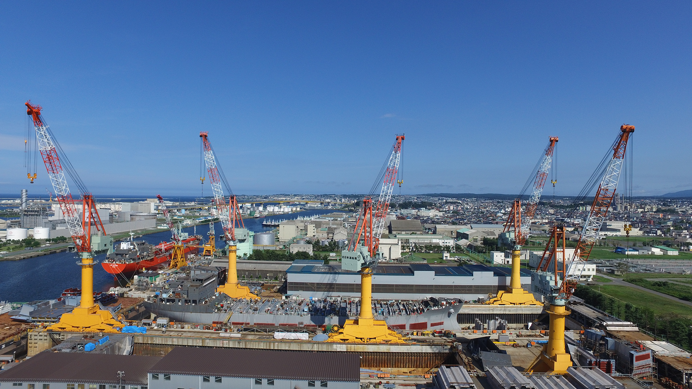

「造船」と聞いて、
何を想像しますか？
漠然としたイメージだけで、自分の可能性を閉ざしていませんか？
その不安、たった1日で"確信"に変えませんか？
現場体験会で得られる3つの価値
写真や言葉だけでは伝わらない、リアルな造船業の魅力に触れる。

圧巻のスケールを"五感"で体感
鋼鉄の匂い、響き渡る音、巨大構造物の迫力。仕事の本当のスケールを肌で感じ、自分の仕事が社会に与えるインパクトを実感できます。
"本物"の仕事に触れ、可能性を発見
簡単な溶接体験やCAD操作などを通じ、専門技術の面白さに触れられます。「自分にもできるかも」という手応えが、未来への第一歩になります。
働く"人"のリアルな声を聞く
現場で働く若手社員との座談会をご用意。給与や休日、仕事の厳しさや本当のやりがいなど、ネットでは聞けない"本音"を直接質問できます。
当日のプログラム
見て、触れて、話して。一日で造船のすべてが分かる。
タイムスケジュール
- 09:00集合・受付
- 09:15安全教育・会社説明
- 10:00【圧巻】現場見学（ドック、加工工場）
- 11:00【発見】職種別体験（溶接・塗装・ぎょう鉄）
- 12:00昼食（社員食堂で先輩社員と）
- 13:00【本音】若手社員との座談会
- 14:30質疑応答・アンケート記入
- 15:00解散
座談会参加社員

高橋 大輔
製造部（溶接） / 2019年入社
火花を散らす仕事、カッコいいですよ！

渡辺 翔太
製造部（ぎょう鉄） / 2017年入社
巨大な鉄板を自在に曲げる、職人技です。
参加者の声
実際に体験した先輩たちの本音です。
"想像の10倍スケールが大きくて、ただただ圧倒されました。社員の方々が自分の仕事に誇りを持っているのが伝わってきて、自分もここで働きたいと強く思いました。"

田中 翼
大学4年生
"未経験で不安でしたが、体験会で丁寧に教えてもらい、自分にもできることがあると分かりました。入社の決め手になったのは、座談会で聞いた社員の皆さんの『本音』です。"

佐藤 健司
26歳・転職
安全へのコミットメント
当社の体験会は、安全を最優先に運営されます。経験豊富なスタッフの指導のもと、専用の保護具を着用し、安全が確保されたエリアでのみ見学・体験を行います。安心してご参加ください。
募集要項 & FAQ
- 開催日時2025年10月18日(土), 11月15日(土) 9:00-15:00
- 場所北日本造船株式会社（Google Map）
- 対象学生（学部不問）、第二新卒、転職希望者
- 定員各回10名（先着順）
- 参加費無料（昼食支給）
- 服装汚れても良い長袖・長ズボン、スニーカー
- 持ち物筆記用具
- その他交通費は一律2,000円を支給します。
もちろんです。知識ゼロの方を対象としたプログラムです。専門用語は使わず、分かりやすく説明しますのでご安心ください。
見学が中心で、ハードな肉体作業はありません。体験も簡単なものですので、体力に自信がない方でも問題なくご参加いただけます。
毎回多くの女性が参加されています。当社では女性技術者も多数活躍しており、座談会で直接話を聞くことも可能です。